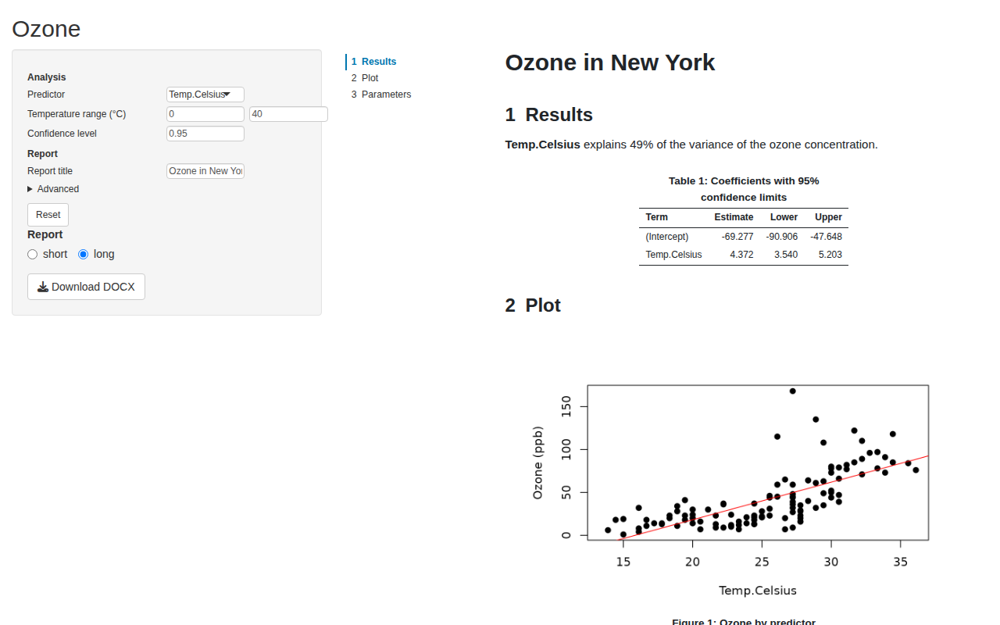
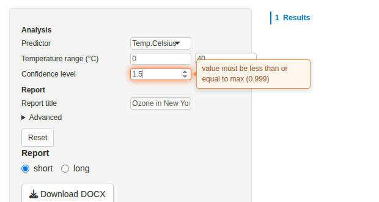
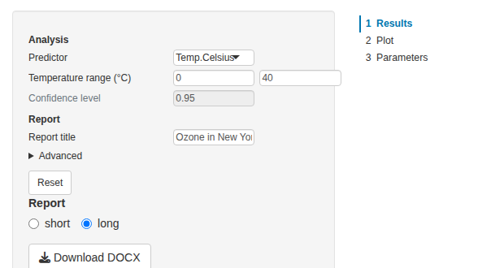
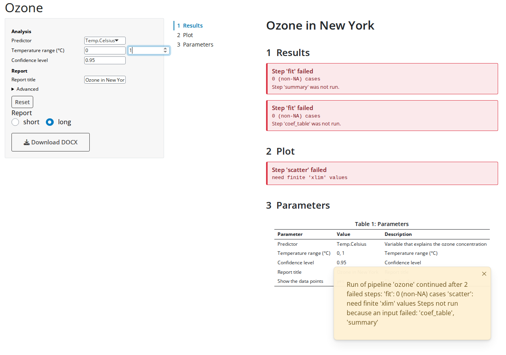

Get started ended with a small Shiny app, and Parameters described the params that the app shows. This vignette goes through the app in detail: the parameter UI and what it does with invalid input, the viewer and how it shows failed steps, two reports from one pipeline of which the app runs only the one shown, the render cache, and the two Bootstrap versions. It builds on pipeflow’s vignettes Pipeline views and Error handling.
The code of the app is not run in the vignette, since it needs a browser. The screenshots come from this very app. Two apps come with pubflow: the report app combines all of it in an app with a sidebar and adds the download of the report, the modules app shows what the modules return, locked steps and a standalone module:
shiny::runApp(system.file("examples", "report-app", package = "pubflow"))
shiny::runApp(system.file("examples", "modules-app", package = "pubflow"))The pipeline
The app shows the ozone analysis of the previous vignettes. The
pipeline has two reports: a short one with the summary and the table of
coefficients, and a long one that adds a plot and the table of
parameters. Every section of a report is a step, tagged with the reports
that show it, and the layout step of a report places the sections of its
tag (pub_layout_inputs(), see Get started). The config has the params
of the analysis, the title of the reports and an advanced param.
library(pipeflow)
library(pubflow)
config <- param_config(
xVar = choice_param(
"Temp.Celsius",
choices = c("Temp.Celsius", "Wind", "Solar.R"),
label = "Predictor",
description = "Variable that explains the ozone concentration",
area = "analysis",
source = "user"
),
window = param_group(
list(
from = numeric_param(0, label = "From", min = -20, max = 60),
to = numeric_param(40, label = "To", min = -20, max = 60)
),
label = "Temperature range (°C)",
area = "analysis",
source = "user"
) |>
add_validity(\(x) if (x$from < x$to) "" else "'From' must be below 'To'"),
level = numeric_param(
0.95,
label = "Confidence level",
min = 0.5,
max = 0.999,
area = "analysis",
source = "user"
),
title = param(
"Ozone in New York",
label = "Report title",
area = "report",
source = "user"
),
showPoints = choice_param(
"yes",
choices = c("yes", "no"),
label = "Show the data points",
area = "report",
source = "user",
advanced = TRUE
)
)The table, the plot and the table of parameters are made by functions
defined outside of the pipeline, so that the steps don’t keep the
pipeline’s environment alive (see Get started). A choice reaches a step
as a factor, so the plot converts xVar to text before it
picks a column with it.
coef_table <- function(model, level) {
ci <- confint(model, level = level)
coefs <- data.frame(
term = rownames(ci),
estimate = coef(model),
lower = ci[, 1L],
upper = ci[, 2L]
)
pub_table(
coefs,
caption = sprintf("Coefficients with %g%% confidence limits", 100 * level),
labels = c(
term = "Term",
estimate = "Estimate",
lower = "Lower",
upper = "Upper"
),
digits = c(estimate = 3L, lower = 3L, upper = 3L)
)
}
scatter_plot <- function(data, xVar, showPoints) {
xVar <- as.character(xVar)
grDevices::pdf(NULL)
on.exit(grDevices::dev.off())
grDevices::dev.control("enable")
plot(
data[[xVar]],
data$Ozone,
type = if (showPoints == "yes") "p" else "n",
pch = 19,
xlab = xVar,
ylab = "Ozone (ppb)"
)
abline(lm(data$Ozone ~ data[[xVar]]), col = "red")
pub_figure(recordPlot(), caption = "Ozone by predictor", width = 6, height = 4)
}
params_table <- function(pip, xVar, window, level, title, showPoints) {
# the arguments make the step run again when a reported param changes
pub_params_table(pub_get_params(pip, source = "user"), caption = "Parameters")
}
pip <- pip_new("ozone") |>
pip_add("data", function(data = airquality) data) |>
pip_add(
"prep",
function(df = ~data, window = list(from = 0, to = 40)) {
df[, "Temp.Celsius"] <- (df[, "Temp"] - 32) * 5 / 9
inRange <- df$Temp.Celsius >= window$from & df$Temp.Celsius <= window$to
df[inRange, ]
}
) |>
pip_add("fit", function(data = ~prep, xVar = "Temp.Celsius") {
lm(paste("Ozone ~", xVar), data = data)
}) |>
pip_add("coef_table", function(model = ~fit, level = 0.95) {
coef_table(model, level)
}) |>
pip_add("summary", function(model = ~fit, xVar = "Temp.Celsius") {
pub_text(sprintf(
"**%s** explains %.0f%% of the variance of the ozone concentration.",
xVar,
100 * summary(model)$r.squared
))
}) |>
pip_add(
"scatter",
function(data = ~prep, xVar = "Temp.Celsius", showPoints = "yes") {
scatter_plot(data, xVar, showPoints)
}
) |>
pip_add(
"params_table",
function(
xVar = "Temp.Celsius",
window = list(from = 0, to = 40),
level = 0.95,
title = "Ozone in New York",
showPoints = "yes"
) {
params_table(.self, xVar, window, level, title, showPoints)
}
) |>
pip_add(
"results",
function(summary = ~try(summary), table = ~try(coef_table)) {
pub_section("Results", summary, table)
},
tags = c("short", "long")
) |>
pip_add(
"plot",
function(scatter = ~try(scatter)) pub_section("Plot", scatter),
tags = "long"
) |>
pip_add(
"parameters",
function(table = ~try(params_table)) pub_section("Parameters", table),
tags = "long"
)The layout steps come last, because pub_layout_inputs()
reads the tagged steps when it is called. Their inputs are
~try() references, so that a step that fails shows up as an
error box in the document instead of stopping it:
for (report in c("short", "long")) {
pip_add(
pip,
report,
function(title = "Ozone in New York", ...) {
pub_doc(unname(list(...)), title = title)
},
params = pub_layout_inputs(pip_view(pip, tags = report))
)
}
invisible(lapply(config, param_validity_assert))
pip_set_params(pip, config, unknown = "error")The app
The app has the parameter UI in a sidebar and the viewer next to it. A radio button chooses the report and a button downloads it.
library(shiny)
ui <- fluidPage(
titlePanel("Ozone"),
sidebarLayout(
sidebarPanel(
width = 4,
pub_params_ui("params"),
radioButtons("report", "Report", c("short", "long"), inline = TRUE),
downloadButton("download", "Download DOCX")
),
mainPanel(width = 8, pub_viewer_ui("viewer", height = "85vh"))
)
)
server <- function(input, output, session) {
pip <- pip_clone(pip) # every session gets its own pipeline
cache <- pub_cache()
params <- pub_pipeline_params_server(
"params",
pip,
group_labels = c(analysis = "Analysis", report = "Report"),
reset = TRUE
)
doc <- reactive({
params$revision() # run again after every change of a param
report <- input$report
withCallingHandlers(
pip_run(pip_view(pip, step = report), lgr = NULL, on_error = "continue"),
pipeflow_run_failed = function(w) {
showNotification(conditionMessage(w), type = "warning")
message(conditionMessage(w)) # log it
invokeRestart("muffleWarning")
}
)
pip[[report, "out"]]
})
pub_viewer_server("viewer", doc, cache = cache)
output$download <- downloadHandler(
filename = \() paste0(input$report, ".docx"),
content = \(file) {
req(inherits(doc(), "pub_doc"))
pub_render(doc(), "docx", file = file, cache = cache)
}
)
}
shinyApp(ui, server)
area of the params, and the advanced param
is in the collapsed block.The following sections go through the parts of the app.
The parameter UI
pub_params_ui() places the table of inputs and
pub_pipeline_params_server() fills it. The server reads the
params of the pipeline with pub_get_params() and shows an
input for each one (plain function defaults are no params and get no
input). Every value that the user enters is checked against the rules of
the param (see Parameters) and, if it
is valid, set in the pipeline with pip_set_params(). The
pipeline never gets an invalid value.
The type of a param decides on the input: text for strings, a numeric
input for numbers, a select input for factors (or radio buttons with
ui_widget = "radio"), a switch for logicals, and a slider
with ui_widget = "slider". The children of a group are
shown side by side. The ui_args attribute passes arguments
on to the input function,
e.g. ui_args = list(multiple = TRUE) for a select input
that takes several values. ?pub_param_input lists them all
and shows how to use a single input in your own UI.
The layout follows the config:
- The rows are in the order of the config.
- The attribute
group_by(default"area") gives the headings of the groups, named bygroup_labels. Without it, or if all params have the same value, there are no headings. - A param with
advanced = TRUEgoes to a collapsed “Advanced” block of its group. - The
descriptionof a param is shown as a tooltip of its input (withtooltips = FALSEit is not), andwidthsets the width of the inputs. -
reset = TRUEadds a button that sets the inputs back to the values that the table started with.
The table is only built again when the structure of the params
changes. If a step sets other values (e.g. defaults that depend on the
data), the inputs are updated in place. To pick this up, give the module
a refresh argument, a reactive that changes whenever the
params should be read again from the pipeline.
Which params are shown
The module shows the params of the pipeline or view that it gets. A view restricts the table to the params of the steps of the view, here the steps of the analysis (a view shows the params of its own steps, not those of the steps they depend on):
analysis <- pip_view(pip, step = c("prep", "fit", "coef_table"))
pub_pipeline_params_server("params", analysis)The values still reach every step that has the param, also outside
the view (one value per name, see Parameters). With
filter = list(area = "analysis") the table shows the params
with that attribute only. This is how an app puts the analysis params
and the report params into different places.
Invalid input
An invalid value is shown next to its input, in a message that goes
away after a few seconds, and the input glows. The message is also
written with message(), so it ends up in the log of the
app. What happens to the input is up to on_invalid:
-
"restore"(the default): the input gets back its last valid value. -
"keep": the input keeps the invalid value, which does not reach the pipeline, until the user has corrected it. The module’svalid()isFALSEin the meantime, so the app can hold back what depends on it.
params <- pub_pipeline_params_server("params", pip, on_invalid = "keep")
on_invalid = "keep": the input glows and shows the first
message of the rule.Text and numeric inputs report their value when the user leaves the
input or presses Enter (update_on = "blur"), other inputs
immediately. With update_on = "change" they report after
every keystroke, after a short delay.
If a group fails a rule of its own, e.g. “From” is not below “To”,
the input that the user changed is marked. And if the pipeline itself
rejects a value (pip_set_params() fails, because the
pipeline holds stricter rules than the ones the module read), the input
is treated like an invalid one and shows the value of the pipeline
again.
Locked inputs
A param with locked = TRUE is shown as a disabled input
(see Parameters). The
module ignores a change that still reaches it, and the reset button
leaves it alone. pipeflow’s locks count too: the params of a step locked
with pip_lock() are shown as locked, also in the other
steps that hold the same param, because pip_set_params()
skips locked steps and a change would leave the steps with different
values.
pip_set_params(pip, list(level = numeric_param(
0.95,
label = "Confidence level",
min = 0.5,
max = 0.999,
area = "analysis",
source = "user",
locked = TRUE
)))
The module without a pipeline
pub_pipeline_params_server() is
pub_params_server() plus the link to a pipeline. The latter
takes a reactive that returns the params, e.g. a config, and gives you
the values:
params <- pub_params_server("params", reactive(config))
params$values() # the current valid values, as plain values
params$changed() # what changed with the latest valid change
params$valid() # FALSE if an input holds an invalid value (on_invalid = "keep")Use it where the params do not belong to a pipeline, e.g. for the arguments of a function that you call in the app yourself.
Running the pipeline
pub_pipeline_params_server() returns
revision, a reactive that counts the successful changes of
the pipeline’s params. The reactive that runs the pipeline depends on
it, so that it runs again after every change. pip_run()
only runs the steps that are outdated, so a change of the title does not
fit the model again.
The pipeline is a reference object. A change of a param in one
session would also change it for every other session, so
server() starts with pip_clone(pip): every
session has its own copy.
Only the steps of the report shown
The reactive runs the view of the report that is shown,
pip_view(pip, step = report), not the whole pipeline. A
view runs the step and the steps it depends on. If the user shows the
short report, the plot and the table of parameters are not made. The
step states show it:
pip_run(pip_view(pip, step = "short"), lgr = NULL)
pip[, c("step", "state")]
# step state
# <char> <char>
# 1: data done
# 2: prep done
# 3: fit done
# 4: coef_table done
# 5: summary done
# 6: scatter new
# 7: params_table new
# 8: results done
# 9: plot new
# 10: parameters new
# 11: short done
# 12: long newEverything of the long report that the short report does not need is
still new. Switching to the long report runs the missing
steps (scatter, params_table,
plot, parameters and the layout step), while
the steps of the short report are not run again.
Failed steps
Run the pipeline with on_error = "continue". A step that
fails does not stop the run, and the steps that depend on it are not
run, but the layout step still builds the document. It places the
failure where the output would have been, and the viewer shows it as an
error box. The run signals one warning for all failed steps
(pipeflow_run_failed); the app shows it as a notification
and logs it.
To see this in the app, set the end of the temperature range (“To”) to 1: no row of the data is left, so the model and the plot fail.

If the layout step itself fails, its output is the error, and the
viewer shows it as one box: pass pip[[report, "out"]] on as
it is, as in the app above. An error is never embedded silently in a
document.
The viewer
pub_viewer_ui() and pub_viewer_server()
show a document as one scrollable page, with a table of contents that
follows the section being read. The server takes a reactive that returns
the document, NULL (shows “No results”) or an error.
-
toc = FALSEhides the table of contents. -
height = NULLlets the viewer grow with the document and the page scrolls. With a CSS height, e.g."85vh"as above, the viewer has that height and scrolls itself.
The viewer renders the document again as a whole when it changes. Figures and tables are not made again for that, they come from the render cache.
The render cache
Rendering a figure takes about 0.1 s, and the viewer would repeat
that for each figure after every change of a param.
pub_cache() holds the rendered figures (as files) and the
HTML of the tables, and the viewer and the render functions use it when
they get it as cache. So a report downloaded after viewing
needs not render its figures again: the app above gives the same cache
to the viewer and to pub_render().
cache <- pub_cache()
pub_viewer_server("viewer", doc, cache = cache)
pub_render(doc(), "docx", file = file, cache = cache)pub_cache() is an environment, so it is updated in
place. By default it is kept in a new temporary directory of the R
session, max_entries limits it (the least recently used
entries and their files are removed beyond that), and dir
puts the files elsewhere. A figure is only cached if a step made it:
pipeflow stamps it when the step runs, and the stamp is part of the key.
The cache therefore never shows a stale figure after a step ran again.
Make the cache in server(), as above, for one cache per
session, or outside of it to share the entries between sessions.
Bootstrap 3 and 5
The modules work with Bootstrap 3, which
shiny::fluidPage() uses, and with Bootstrap 5, which
bslib’s page functions use. The app above runs on both by changing the
page:
ui <- bslib::page_fluid(
# the same layout as before
)Nothing else changes: the modules bring their own JavaScript and CSS
(as an HTML dependency), also for the tooltips of the inputs. The
screenshot of the failed steps above is a Bootstrap 5 page, the others
are Bootstrap 3. The example apps show both: add ?bs=5 to
their URL.
Where next
- Get started shows the workflow in one example, Parameters the params in depth.
- The help pages of the functions describe the options:
?pub_params_ui,?pub_param_input,?pub_viewer_ui,?pub_cache.